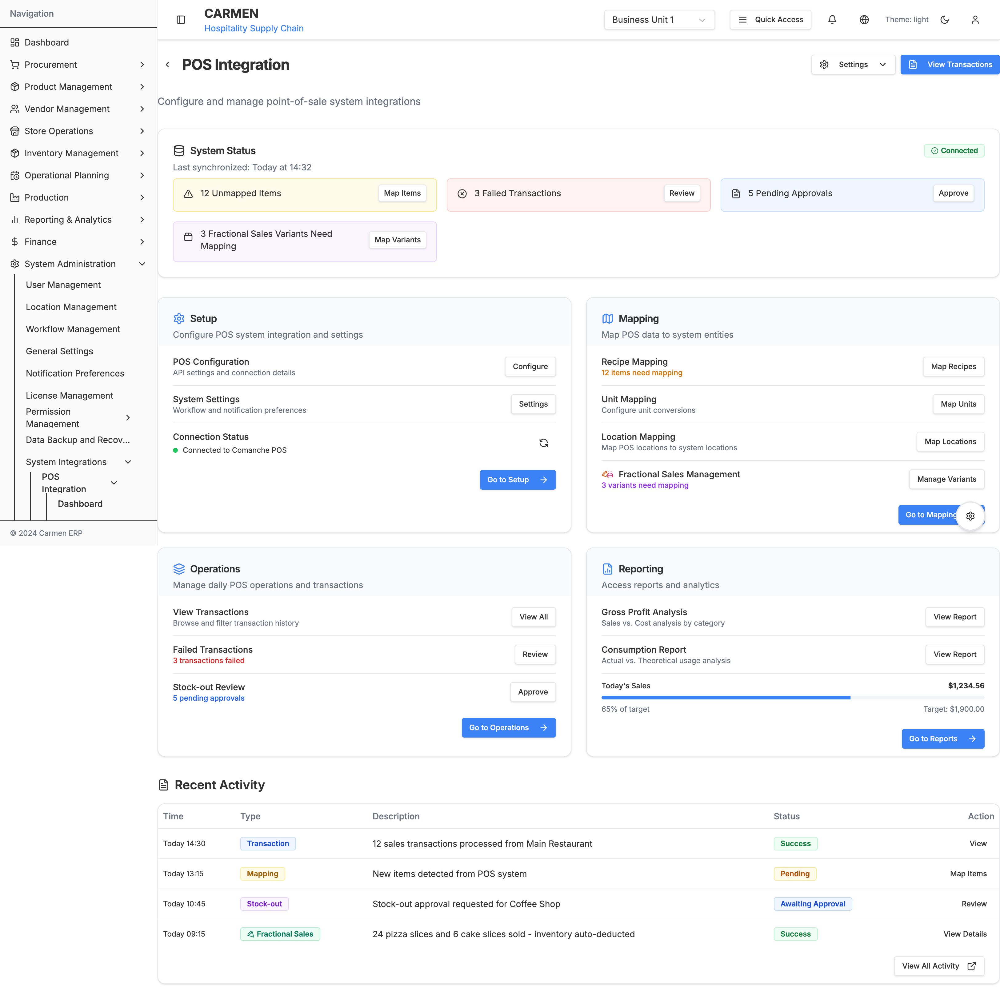
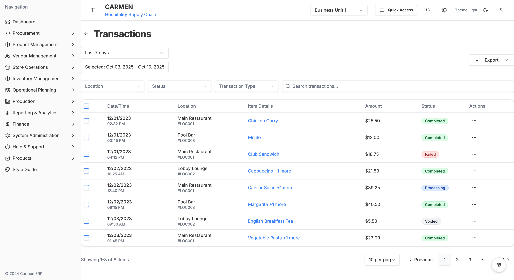
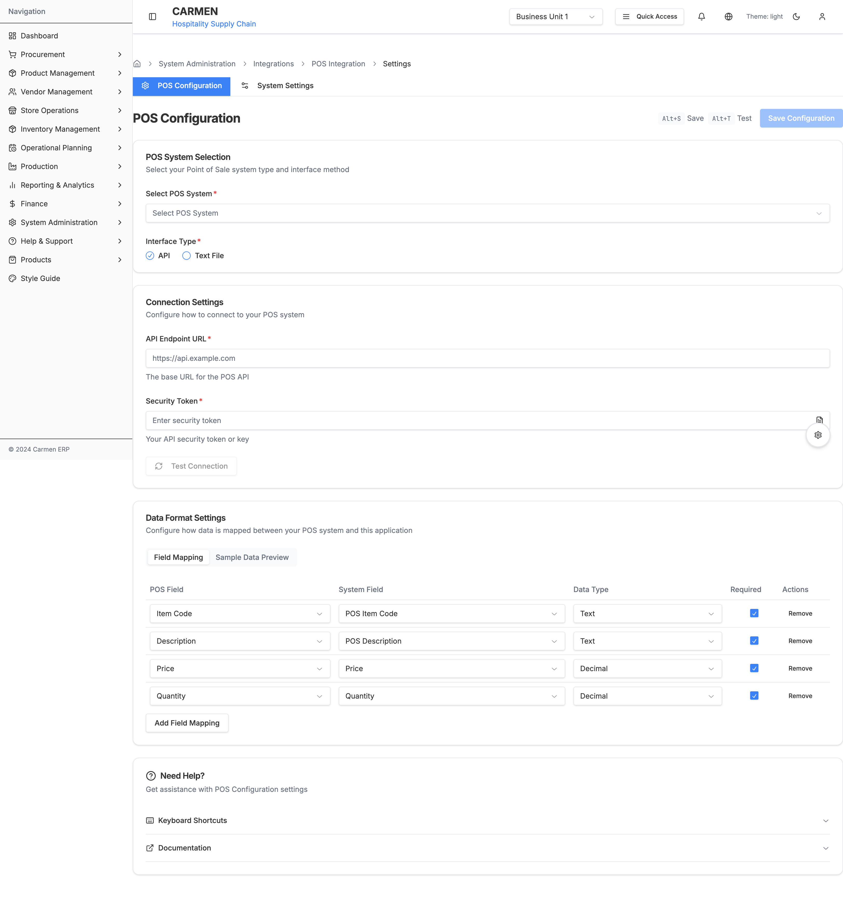

POS Integration Module Documentation
Overview
The POS Integration module provides comprehensive tools for integrating point-of-sale systems with the Carmen ERP inventory management system. It enables seamless synchronization of sales transactions, automated inventory deductions, recipe mapping, and detailed consumption analysis.
Primary Functions:
- Real-time POS transaction synchronization
- Recipe and item mapping between POS and ERP systems
- Unit conversion management
- Location mapping and multi-outlet support
- Fractional sales management (pizza slices, cake portions)
- Gross profit and consumption analysis
- Automated inventory adjustments from sales data
Screenshots

POS Integration Dashboard - System status overview with alerts and quick access to all functions

Recipe Mapping - Map POS items to system recipes with unit conversion tracking

Fractional Variants Management - Configure pizza slices, cake portions, and multi-yield recipes

Transaction Management - Browse, filter, and manage POS sales transactions

Gross Profit Analysis - Sales vs cost analysis with trend visualization

Consumption Report - Actual vs theoretical usage analysis
Module Information
- Main Path:
/system-administration/system-integrations/pos - Icon: Database/Cable
- Primary Purpose: POS system integration, sales data synchronization, and consumption analysis
- Status: Production-ready
- Parent Module: System Administration → System Integrations
Quick Navigation
Module Structure
The POS Integration module consists of 5 main sections:
1. Dashboard
Path: /system-administration/system-integrations/pos
Purpose: Central hub for POS integration monitoring and quick access
Features:
- System connection status (Connected/Disconnected)
- Last sync timestamp
- Alert cards for:
- Unmapped items requiring recipe mapping
- Failed transactions requiring review
- Pending stock-out approvals
- Unmapped fractional variants
- Quick access cards for:
- Setup (Configuration & System Settings)
- Mapping (Recipes, Units, Locations, Fractional Variants)
- Operations (Transactions, Failed Transactions, Stock-out Review)
- Reporting (Gross Profit Analysis, Consumption Report)
- Recent activity feed with transaction history
2. Mapping
Path: /system-administration/system-integrations/pos/mapping
Purpose: Map POS data to ERP system entities
Recipe Mapping - Primary interface for mapping POS items to system recipes

Unit Mapping - Configure unit conversions between POS and ERP

Location Mapping - Map POS outlets to system locations
Fractional Variants - Manage pizza slices, cake portions, and multi-yield recipes
Submodules:
2.1 Recipe Mapping
Path: /system-administration/system-integrations/pos/mapping/recipes
Features:
- Map POS items to system recipes
- Track mapping status (Mapped, Unmapped, Error)
- Unit conversion configuration
- Category-based organization
- Bulk mapping operations
- Search and advanced filtering
- Status badges for quick identification
Data Displayed:
- POS Item Code
- POS Description
- Recipe Code (with link to recipe detail)
- Unit conversion (POS Unit → Recipe Unit)
- Conversion rate
- Category
- Status (Mapped/Unmapped/Error)
- Actions menu
2.2 Fractional Variants Mapping
Path: /system-administration/system-integrations/pos/mapping/recipes/fractional-variants
Purpose: Manage partial recipe sales (pizza slices, cake portions)
Features:
- Configure fractional sales for base recipes
- Define portion sizes (slice, quarter, half, whole)
- Automatic yield percentage calculation
- Individual pricing per variant
- Cost calculation per portion
- Inventory deduction automation
- Visual recipe hierarchy
Example Use Cases:
- Pizza: Sold by slice (1/8) or whole
- Cake: Sold by slice (1/16), quarter (1/4), half (1/2), or whole
- Large batches: Multiple portion sizes from single recipe
Data Displayed:
- POS Code and Description
- Variant Type (Slice, Quarter, Half, Whole)
- Portion Size
- Yield Percentage (% of base recipe)
- Selling Price and Cost
- Mapping Status
- Edit Mapping action
2.3 Unit Mapping
Path: /system-administration/system-integrations/pos/mapping/units
Features:
- Map POS units to system units
- Configure conversion factors
- Support for sales units and recipe units
- Active/Inactive status management
- Bulk operations
Example Mappings:
- PCS (Piece) → EA (Each): 1:1
- GLASS → EA (Each): 1:1
- SLICE → EA (Each): 0.125:1 (for fractional items)
- OZ (Ounce) → KG (Kilogram): 0.0283:1
2.4 Location Mapping
Path: /system-administration/system-integrations/pos/mapping/locations
Features:
- Map POS locations to system locations
- Support multiple POS systems (Comanche, HotelTime, Soraso)
- Track mapping status
- Sync timestamp tracking
- Location-specific settings
Data Displayed:
- POS Location Code
- POS Location Name
- ERP Location (mapped)
- POS System
- Status (Active/Unmapped/Error)
- Last Sync Date/Time
- Actions menu
3. Transactions
Path: /system-administration/system-integrations/pos/transactions
Purpose: Browse, filter, and manage POS sales transactions
Features:
- Transaction list with pagination
- Date range filtering
- Location filtering
- Status filtering (Completed, Processing, Failed, Voided)
- Transaction type filtering
- Expandable item details
- Bulk selection and export
- Action menu per transaction (View, Void, Reprocess, Export)
Transaction Workflow:
- POS system sends sales data
- Carmen receives and validates transaction
- Recipe mapping applied
- Inventory automatically deducted
- Cost tracking updated
- Transaction marked as Completed
Status Types:
- Completed: Successfully processed and inventory updated
- Processing: Currently being processed
- Failed: Error occurred, requires review
- Voided: Transaction cancelled
Data Displayed per Transaction:
- Date and Time
- Location (Name and Code)
- Item Details (with expand for full list)
- Total Amount
- Status Badge
- Actions Menu
4. Reports
Path: /system-administration/system-integrations/pos/reports
Purpose: Analyze sales performance and consumption patterns
4.1 Gross Profit Analysis
Path: /system-administration/system-integrations/pos/reports/gross-profit
Features:
- Sales revenue tracking
- Cost of sales calculation
- Gross profit computation
- Margin percentage analysis
- Trend visualization (6-month)
- Multi-outlet comparison
- Export to Excel/PDF
- Date range filtering
- View by: Outlet, Category, or Item
Key Metrics:
- Sales Revenue: Total sales for period
- Cost of Sales: Total ingredient/recipe costs
- Gross Profit: Revenue minus cost
- Margin %: (Gross Profit / Revenue) × 100
- vs Target: Comparison to target margins
Analysis Views:
- By Outlet: Performance per location
- By Category: Performance per menu category
- By Item: Individual recipe profitability
4.2 Consumption Report
Path: /system-administration/system-integrations/pos/reports/consumption
Features:
- Theoretical usage calculation (based on recipe costs × sales quantity)
- Actual usage tracking (based on inventory deductions)
- Variance analysis (Actual - Theoretical)
- Daily consumption trends
- Location-based filtering
- Category-based analysis
- Item-level detail view
- Variance alerts and thresholds
Key Metrics:
- Theoretical Usage: Expected consumption based on recipes
- Actual Usage: Real inventory deductions
- Variance Amount: Difference (Actual - Theoretical)
- Variance %: (Variance / Theoretical) × 100
- Target Variance: Acceptable variance threshold (typically 3%)
Use Cases:
- Identify waste or theft
- Monitor portion control
- Validate recipe accuracy
- Track preparation efficiency
- Detect inventory shrinkage
5. Settings
Path: /system-administration/system-integrations/pos/settings
Purpose: Configure POS system integration parameters
5.1 POS Configuration
Path: /system-administration/system-integrations/pos/settings/config

Features:
- POS system selection (Comanche, HotelTime, Soraso, etc.)
- API endpoint configuration
- Authentication settings (API Key, Username/Password, OAuth)
- Connection testing
- Field mapping configuration
- Sync frequency settings
- Data retention policies
Configuration Sections:
- Basic Settings: POS system type, name, description
- Connection Details: API URL, authentication method
- Sync Settings: Frequency, batch size, retry policy
- Field Mapping: Map POS fields to Carmen fields
- Advanced Options: Timeout, logging, error handling
5.2 System Settings
Path: /system-administration/system-integrations/pos/settings/system
Features:
- Workflow preferences
- Notification settings
- Default behaviors
- Approval requirements
- Stock-out handling
- Failed transaction policies
Key Features
Real-Time Synchronization
- ✅ Continuous POS data sync
- ✅ Automatic inventory adjustments
- ✅ Real-time status monitoring
- ✅ Error detection and alerting
Comprehensive Mapping
- ✅ Recipe-to-POS item mapping with unit conversion
- ✅ Fractional sales management (pizza slices, cake portions)
- ✅ Multi-location support
- ✅ Flexible unit conversion system
- ✅ Status tracking (Mapped/Unmapped/Error)
Transaction Management
- ✅ Transaction history with full audit trail
- ✅ Advanced filtering and search
- ✅ Bulk operations and export
- ✅ Failed transaction recovery
- ✅ Stock-out approval workflow
Advanced Reporting
- ✅ Gross profit analysis with trend visualization
- ✅ Consumption reporting (Actual vs Theoretical)
- ✅ Variance analysis and alerts
- ✅ Multi-dimensional views (by outlet, category, item)
- ✅ Export to Excel/PDF
Flexible Configuration
- ✅ Support for multiple POS systems
- ✅ Customizable field mapping
- ✅ Configurable sync frequency
- ✅ Authentication flexibility (API Key, OAuth, Basic Auth)
- ✅ Connection testing and validation
Technical Implementation
Tech Stack
- Frontend: Next.js 14 (App Router), React, TypeScript
- UI Components: Shadcn/ui, Radix UI
- Styling: Tailwind CSS
- Charts: Recharts (Bar, Line, Area charts)
- Tables: TanStack Table (React Table v8)
- Forms: React Hook Form + Zod validation
- Date Handling: date-fns, React Day Picker
Key Components
POSIntegrationPage- Main dashboard with status cardsRecipeMappingPage- Recipe mapping interfaceFractionalVariantsMappingPage- Fractional sales managementUnitMappingPage- Unit conversion configurationLocationMappingPage- Location mapping interfaceTransactionsPage- Transaction list and managementGrossProfitDashboard- Gross profit analysis reportConsumptionReportPage- Consumption analysis reportPOSConfigPage- POS configuration settings
File Locations
app/(main)/system-administration/system-integrations/pos/
├── page.tsx # Main dashboard
├── layout.tsx # POS layout wrapper
├── components/
│ ├── floating-settings-button.tsx
│ ├── settings-help-section.tsx
│ └── settings-nav.tsx
├── mapping/
│ ├── layout.tsx
│ ├── components/ # Shared mapping components
│ │ ├── data-table.tsx
│ │ ├── filter-bar.tsx
│ │ ├── mapping-header.tsx
│ │ ├── mapping-nav.tsx
│ │ ├── row-actions.tsx
│ │ └── status-badge.tsx
│ ├── recipes/
│ │ ├── page.tsx # Recipe mapping
│ │ ├── data.ts
│ │ ├── types.ts
│ │ ├── fractional-mapping-helper.ts
│ │ └── fractional-variants/
│ │ └── page.tsx # Fractional variants
│ ├── units/
│ │ ├── page.tsx # Unit mapping
│ │ ├── data.ts
│ │ └── types.ts
│ └── locations/
│ ├── page.tsx # Location mapping
│ ├── data.ts
│ └── types.ts
├── transactions/
│ └── page.tsx # Transaction management
├── reports/
│ ├── page.tsx # Reports hub
│ ├── gross-profit/
│ │ └── page.tsx # Gross profit analysis
│ └── consumption/
│ └── page.tsx # Consumption report
└── settings/
├── layout.tsx
├── page.tsx # Settings hub
├── config/
│ └── page.tsx # POS configuration
└── system/
└── page.tsx # System settings
Navigation Paths
Main Paths
- Dashboard:
/system-administration/system-integrations/pos - Mapping Hub:
/system-administration/system-integrations/pos/mapping/recipes
Mapping Paths
- Recipe Mapping:
/system-administration/system-integrations/pos/mapping/recipes - Fractional Variants:
/system-administration/system-integrations/pos/mapping/recipes/fractional-variants - Unit Mapping:
/system-administration/system-integrations/pos/mapping/units - Location Mapping:
/system-administration/system-integrations/pos/mapping/locations
Operations Paths
- Transactions:
/system-administration/system-integrations/pos/transactions - Reports Hub:
/system-administration/system-integrations/pos/reports - Gross Profit:
/system-administration/system-integrations/pos/reports/gross-profit - Consumption:
/system-administration/system-integrations/pos/reports/consumption
Settings Paths
- Settings Hub:
/system-administration/system-integrations/pos/settings - POS Configuration:
/system-administration/system-integrations/pos/settings/config - System Settings:
/system-administration/system-integrations/pos/settings/system
Business Workflows
Initial Setup Workflow
- Configure POS system connection (Settings → Config)
- Test connection
- Map locations (POS outlets to ERP locations)
- Map units (POS units to ERP units)
- Map recipes (POS items to ERP recipes)
- Configure fractional variants (if applicable)
- Set up notifications and approvals (System Settings)
- Enable automatic sync
Daily Operations Workflow
- Monitor dashboard for alerts
- Review unmapped items (if any)
- Process failed transactions
- Approve stock-outs (if required)
- Review recent activity
Analysis Workflow
- Run Gross Profit Analysis (weekly/monthly)
- Review Consumption Report (daily/weekly)
- Investigate high variances
- Adjust recipes or processes as needed
- Export reports for management review
Integration Points
Data Sources
- POS Systems: Comanche, HotelTime, Soraso, and others
- Recipe Management: Linked to Operational Planning recipes
- Inventory Management: Automatic stock deductions
- Product Management: Ingredient and recipe data
Data Outputs
- Inventory Adjustments: Automated stock deductions
- Cost Tracking: Consumption and variance data
- Financial Reports: Gross profit and margin analysis
- Management Dashboards: Performance metrics
Future Enhancements
Short Term
- Real-time dashboard updates with WebSocket
- Advanced variance alert rules
- Recipe cost optimization suggestions
- Mobile responsive views
- Enhanced export formats
Medium Term
- AI-powered anomaly detection
- Predictive consumption forecasting
- Multi-currency support
- Advanced reconciliation tools
- Batch transaction processing
Long Term
- Machine learning for fraud detection
- Automated recipe correction suggestions
- Cross-location comparison analytics
- Integration with third-party delivery platforms
- Customer behavior analytics from POS data
Related Documentation
- System Administration Module
- Operational Planning Module
- Inventory Management Module
- Product Management Module
Troubleshooting
Common Issues
Connection Failed
- Verify API endpoint URL
- Check authentication credentials
- Test network connectivity
- Review firewall rules
Unmapped Items
- Navigate to Mapping → Recipes
- Search for unmapped items (Status: Unmapped)
- Map to appropriate recipes
- Save and test
High Variance in Consumption Report
- Review recipe accuracy
- Check portion sizes
- Investigate potential waste
- Monitor staff training
Failed Transactions
- Check transaction details
- Verify recipe mapping
- Review inventory availability
- Reprocess or void as appropriate
Last Updated: October 10, 2025
Module Version: 1.0
Documentation Status: Complete